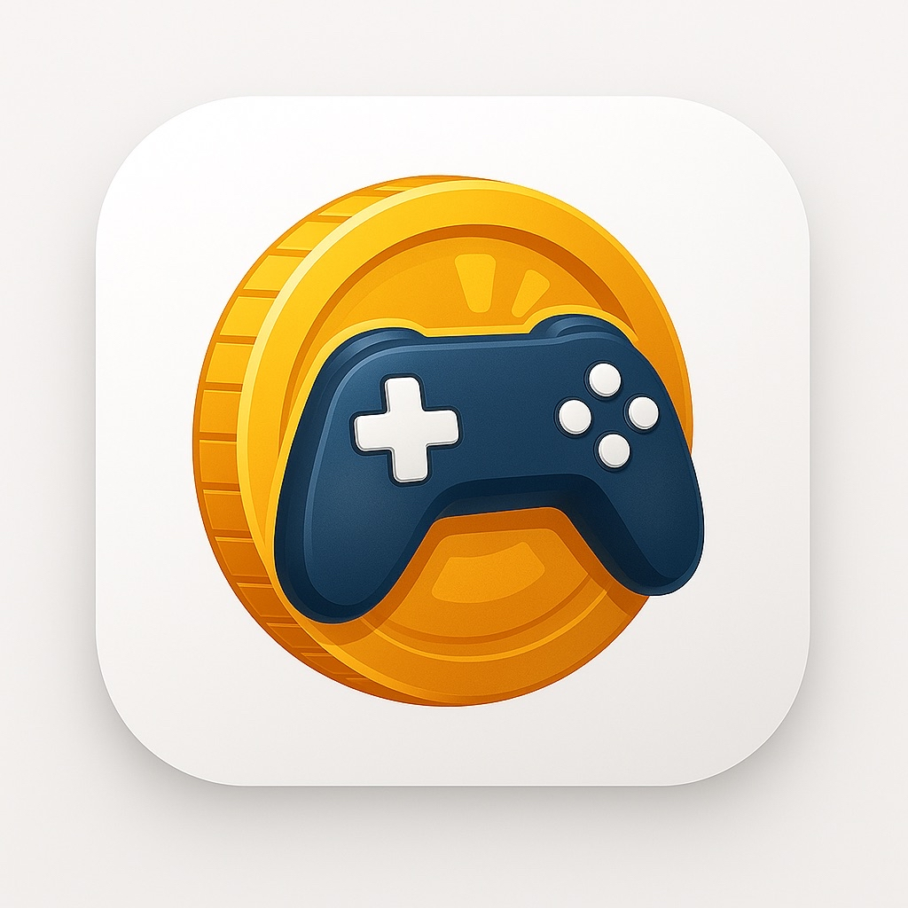

잇겜(EatGame)
앱설명
잇겜(EatGame)은 10~20대 e스포츠 유저들이 일상적으로 즐기는 게임 활동을 통해 보상을 얻는 "제테크형 게임 리워드 플랫폼"입니다. 게임을 단순히
소비하는 행위에서 나아가, 시간을 투자해 코인을 채굴하고, 포인트로 실질적인 리워드(간식, 기프티콘 등)을 얻을 수 있는 구조로 설계되었습니다.
게굴코인 게임을 통한 채굴을 할 수 있다! 게임을 통해 내 간식 기프티콘으로!
잇코인 앱 활동도 열심히 하면! 피씨방 시간을 얻고 음식도 먹자
잇겜은 리그오브레전드,
배틀그라운드를 기점으로 다양한 게임을 통해 리워드를 얻을 수 있습니다